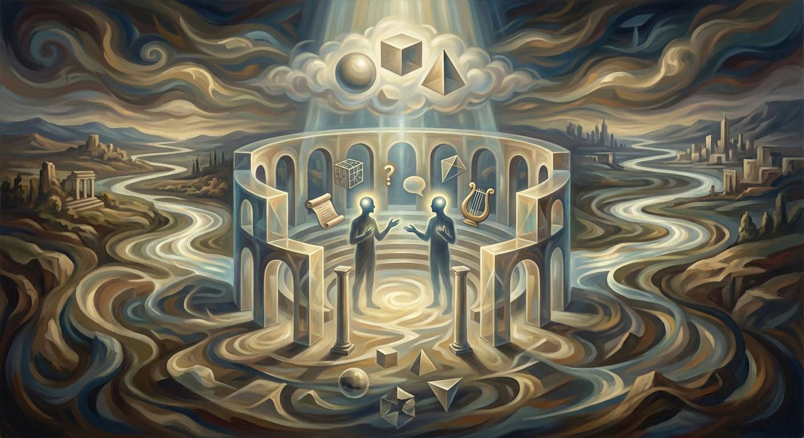

Pragmatism: a philosophy that judges ideas by their practical effects—truth is what works in experience. William James's lectures 'Pragmatism' popularized the view: meaning and belief are tested by their consequences. A quick test: ask “what difference does this make?” #Pragmatism #WilliamJames #Philosophy https://plato.stanford.edu/entries/pragmatism/
Philosophy
Exploring the threads of knowledge across time
A digital commonplace book weaving together philosophy, mathematics, history, and the arts. Short reflections and deeper explorations on the ideas that shaped our world.
Latest Thoughts
View archive →
Karl Popper argued that scientific theories are not defined by being proven true but by being falsifiable: they must make testable, risky predictions that could in principle be shown false by observation or experiment. This criterion distinguishes scientific claims from metaphysical or pseudoscientific ones and reshaped modern philosophy of science. #Philosophy #PhilosophyOfScience #KarlPopper
General
In ancient India, the Upanishads taught that the individual self (ātman) is ultimately identical with the universal reality (brahman). Sayings like "tat tvam asi" express this nondual insight: liberation (moksha) comes from realizing one’s true, undivided nature rather than seeking an external deity. This idea shaped later Hindu metaphysics and philosophical schools, especially Advaita Vedanta, which systematized the ātman–brahman identity.
#Upanishads #AdvaitaVedanta #IndianPhilosophy
General
#Upanishads #AdvaitaVedanta #IndianPhilosophy
Panopticism: Michel Foucault uses Bentham’s Panopticon—an unseen watcher at the center of a prison—to show how modern societies shape behavior through possible surveillance. Belief in being watched makes people self-police; power becomes subtle and internalized. See Foucault’s Discipline and Punish. #Panopticon #Surveillance #Foucault https://plato.stanford.edu/entries/foucault/
Plato (c.427–347 BCE), a student of Socrates, founded the Academy in Athens about 387 BCE. It was a gathering place for teaching and collective inquiry in philosophy, mathematics and dialectic. Plato developed his theory of Forms there and trained many thinkers; the institution influenced Western thought for centuries.
#Plato #AncientPhilosophy #Academy
#Plato #AncientPhilosophy #Academy

General
Mary Midgley (1919–2018), a British moral philosopher, argued that scientific worldviews must not claim to replace philosophy, ethics, and the humanities. Science explains facts and mechanisms but cannot by itself settle questions of meaning, value, moral responsibility, or human purpose; she warned against scientism and urged plural dialogue among disciplines. #Philosophy #Ethics #ScienceAndHumanities
General